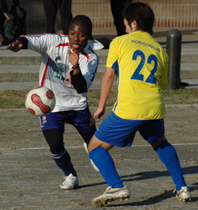
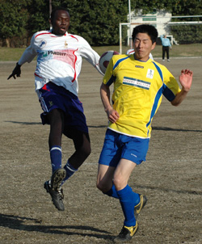
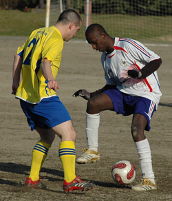
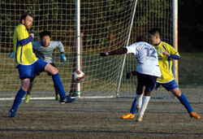

|
OiFuto, Saturday 21st February
 A roller coaster season for Lions saw them field their strongest squad for the first time this season, despite the absence of the influential captain Somi for the third game in a row. With the bench holding the likes of Ahmed Gaafar, Omar, and last year’s Lions top scorer Ken Hersche, surely the Geckoes were in for a match.
Lions should have won the first game against Geckoes, but lack of finishing made them pay dearly as Geckoes won the first meeting 3-1.
A prematch Lions talk reminded the team that this year we plan to win the ‘second’ league in Division 1, hence at least a top 5 finish. With a 9 point gap between Lions and Celts or Geckoes, a win against the latter was a must........also a suggestion that losing to a team twice, must mean they are better than Lions....and that was something Lions would not accept...easily!
It was a first start for the long awaited partnership up front of Zuhair and Ahmed Alzahrani....and the experience of the 2 strikers almost paid of when a brilliant early ball from Ahmed was well controlled by Zuhair who chipped the last defender and hit a shot with his left, only to see the keeper push it wide.
Charles was brilliant on the right wing, and for the spectators, there was some great football to watch with the 2 left-sided Japanese players for Geckoes combining well against a capable Charles and a debutant Yuki for Lions.
Charles had a great run through and as he chipped the last defender, he headed the ball before the out rushing keeper...only to be saved by the post.
Minutes later, Geckoes fashioned a great move from the left and as the ball was laid across the goal a few yards out, everyone was astonished on how the striker missed the goal and laid the ball perfectly in Orlando’s safe hands!
A moment of brilliance by Abu in midfield saw him release an inch perfect ball between the defenders, and Zuhair showed amazing pace to catch up and outrun the last defender, and as the keeper came out, he laid the ball across to an unmarked Ahmed Alzahrani who opened his account for Lions.
A very engaging first half finished 1-0 to Lions.
The second half saw Fahad, Abu and the strangely quiet Hideki, make way for Ken, Omar, and Ahmed Gaafar.....and the introduction of the players paid of as Ken was fouled 25 yards out....and a perfectly crossed ball from the free kick saw Zuhair head home the second goal on the bounce.
Abu and Fahad were re-introduced into the game, as their absence was felt with Geckoes controlling the midfield, and a few scary moments aw them hit the post from a low drven shot.
A great partnership was broken, with Ahmed Alzahrani making way for Walter who has 2 goals in 3 games for Lions.
Ken was fairly quiet, but showed his blistering pace was still there when he pounced on a long ball, dashed into the area, and unselfishly teed the ball up for Ahmed Gaafar who scoredhis third of the season...making it 3-0 to Lions with 10 minutes to go.
The left wing danger man from Geckoes fired home one of the goals of the season as he beat the brilliant Orlando in the near top corner from over 25 yards out...to give Geckoes a deserved consolation.

The game looked destined for an equal revenge for the 3-1 defeat, but a long ball forward by Lions was horribly missed by the Geckoes keeper, and the ball fell nicely to Ahmed Gaafar who side footed neatly into a gaping net, to bring his tally up to 4 goals.
Final score 4-1 to lions.
Many contenders for Man of the match include Zuhair, Ahmed, Ahmed, Charles and Fahad....
Man of the Match: Evis Mbontie...played magnificently in central defence, and the notorious defender who missed 4 games through suspension finished the whole game without conceding even a single free-kick!
Report by Hussein Shehata.
|